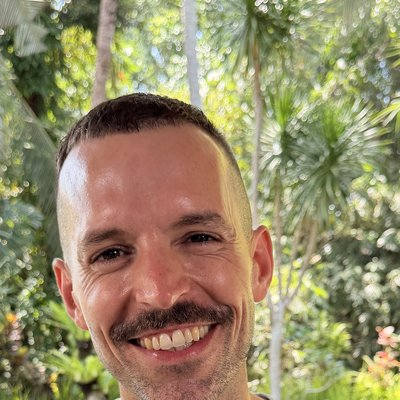
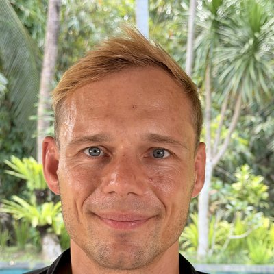

Das Team
Die Menschen hinter den Reisen.
Jede Reise prägt jemand aus dem Team, der sein Fach seit Jahren ausübt. Ron ist als Gastgeber beim Original dabei und bei vielen Themenreisen an einzelnen Tagen.

Verbraucherjournalist und Gastgeber
Ron Perduss
Bekannt aus Radio und Fernsehen. Ron prüft seit vielen Jahren, ob Produkte halten, was Anbieter versprechen. Die Reisen sind seine Idee.

Yoga und Meditation
Stefan Schleich-Kehr
Unterrichtet seit zehn Jahren, für Anfänger wie für Geübte.

Bewegung
Danny Paul Kiel
Sportwissenschaftler, zertifiziert im Functional Movement Screen. Er lebt auf Mallorca.

Coaching
Tatjana Brünjes
Begleitet Menschen in Umbruchzeiten, in vertraulichen Einzelgesprächen und in der Gruppe.

Ernährung
Dr. Volker Manz
Ernährungswissenschaftler und Co-Autor von „Was können wir überhaupt noch essen?“. Er sagt ehrlich, wo die Forschung dünn ist.
Medizin
Dr. med. Delia Francia
Ärztin und Expertin für Longevity. Sie hat jahrelang zu Zellregeneration und Stammzellen geforscht.
Schlaf
Dr. Samia Little Elk
Expertin für Schlaf und innere Uhr.
Kochen
Simone Panteleit
Gastgeberin der Kochreise in der Toskana.